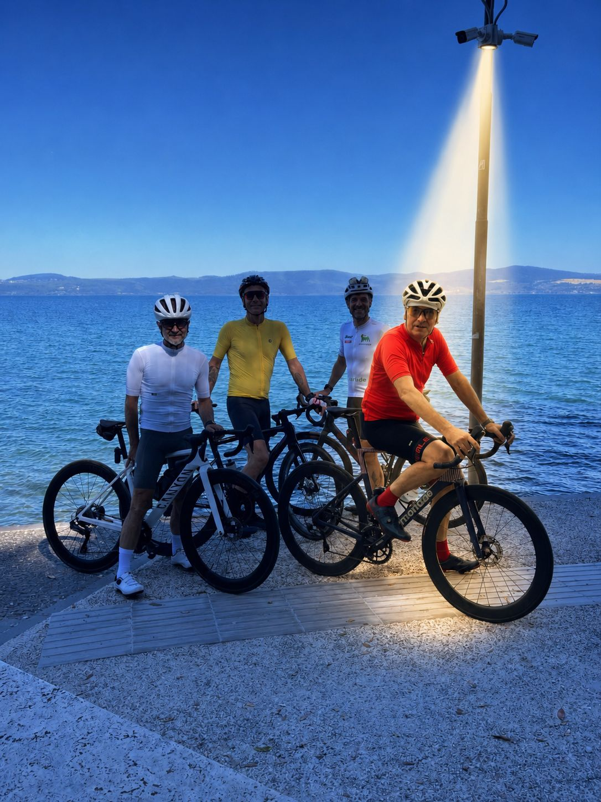
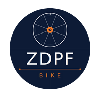
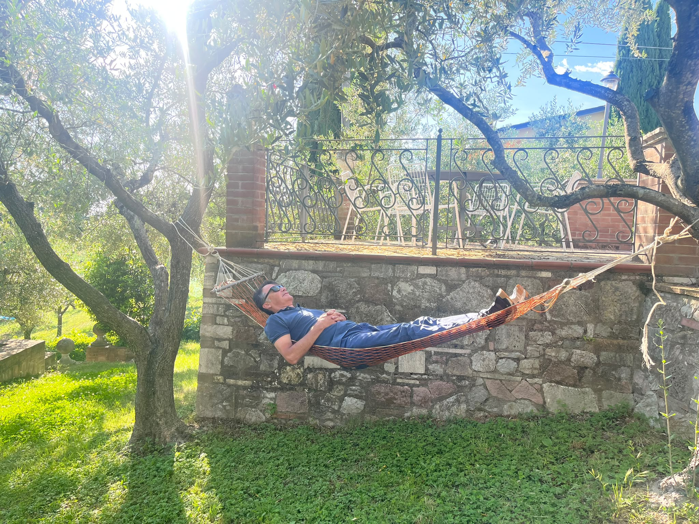

Distanza media per uscita
chilometriIl dato italiano non è solo una supremazia numerica: è un segnale culturale. Si esce più a lungo, e si resta in sella più tempo.


ZDPF Bike IntelligenceDai chilometri medi dell'Italia alla resilienza degli over 60, fino al VO2 max: una newsletter visuale per leggere il ciclismo moderno come un laboratorio a cielo aperto.
Analisi globale 2026
Il report nasce dall'elaborazione di dataset aggregati degli utenti Garmin Edge a livello globale. L'obiettivo è leggere lo stato dell'arte del ciclismo 2026: distanze, dinamiche demografiche, FTP, VO2 max, sicurezza e abitudini di guida.
Trend globali
La media globale è 46 chilometri per uscita. Sopra quella soglia, il ciclismo europeo diventa una geografia della distanza: Italia, Belgio e Spagna guidano il gruppo con un margine netto.
Il dato italiano non è solo una supremazia numerica: è un segnale culturale. Si esce più a lungo, e si resta in sella più tempo.
Le fasce centrali registrano poco più di 43 km medi per uscita. Il report interpreta la flessione come effetto del picco di responsabilità professionali e familiari.
Nel 2025 rispetto al 2024 crescono Belgio, Lussemburgo e Taiwan. Più ciclisti significa più densità, più traffico condiviso, più bisogno di consapevolezza situazionale.
Varia Vue registra in 4K e rileva automaticamente gli incidenti. Varia RearVue 820 aggiunge radar, tracciamento dei veicoli e luce visibile fino a 2 km.
La durata media globale è 115 minuti: praticamente un film intero trascorso sui pedali. Gli over 70 arrivano a 134,2 minuti, contro i 111,6 minuti della fascia 20-29.
Le abitudini temporali mostrano picchi nelle prime ore del mattino e nel tardo pomeriggio; la domenica resta il giorno d'elezione e agosto il mese di massima intensità annuale.
La velocità media globale è 23,96 km/h. I giovani conservano il primato della velocità pura, ma la classifica geografica riflette anche infrastrutture e topografia.
I valori più alti sono collegati a territori spesso pianeggianti e a investimenti in infrastrutture ciclistiche dedicate, che favoriscono andature costanti.
Altimetria
Il dislivello medio globale è 352,9 metri. I ciclisti tra 20 e 29 anni restano i più veloci, ma la fascia 60-69 anni scala in media 366 metri per uscita. L'endurance verticale, nei dati Garmin, matura con il tempo.
Dislivello medio degli utenti Garmin tra 60 e 69 anni: una quota paragonabile all'altezza dell'Empire State Building.
Il dato demografico cambia la narrazione: velocità e salita non sono la stessa performance. La prima premia spesso la giovinezza, la seconda premia continuità, tecnica e gestione dello sforzo.
Potenza
La Functional Threshold Power è la potenza media sostenibile per circa un'ora. Nei dati Garmin diventa il punto in cui una pedalata smette di essere sensazione e diventa programma.
Norvegia, Slovacchia e Repubblica Ceca occupano il vertice della potenza media, tra 228 e 234 watt.
Guida tecnica
Il valore Garmin è relativo: millilitri di ossigeno per chilo al minuto. Per questo il peso corporeo conta: non come giudizio estetico, ma come rapporto tra capacità aerobica e massa da muovere.

Gli utenti PRO percorrono almeno 257 km a settimana. La differenza non è un dettaglio: è l'effetto cumulativo di volume, recupero e programmazione.
Ecosistema
Display brillante per lettura in piena luce, pensato per uscite intense.
Power Glass per ultra-endurance e ricarica solare durante la giornata.
Luce posteriore, videocamera 4K, rilevamento incidenti e salvataggio automatico.
Radar, tracciamento dei veicoli e luce visibile fino a lunga distanza.